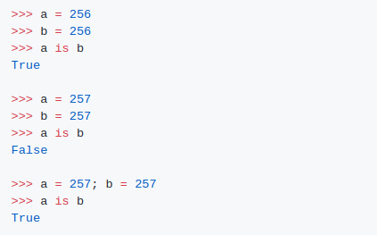
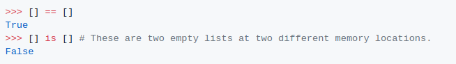
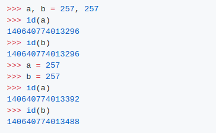

다음은 인터넷상에서 매우 유명한 예입니다.
설명:
"is" 와 "=="의 차이
운영자는 두 피연산자가 동일한 물체를 참조하는지 확인합니다(즉, 피연산자의 ID가 일치하는지 여부를 확인합니다).
== 연산자는 두 피연산자의 값을 비교하여 동일한지 점검합니다.

기준평등을 위한 것이고 ==는 가치평등을 위한 것입니다. 일을 정리하는 예
256은 기존 개체지만 257은 그렇지 않습니다.
Python을 시작하면 -5부터 256까지의 숫자가 할당됩니다. 이 숫자들은 많이 사용되기 때문에, 그것들을 준비하는 것이 이치에 맞습니다.
https://docs.python.org/3/c-api/long.html에서 인용
여기서 통역은 우리가 이미 257 값의 정수를 만들어냈다는 것을 인식하기 위해 y = 257을 실행하는 동안 충분히 똑똑하지 않습니다. 그래서 그것은 메모리에 다른 물체를 만드는 것입니다.
a와 b는 같은 행에서 동일한 값으로 초기화될 때 동일한 객체를 의미합니다.
a와 b를 같은 행에서 257로 설정하면, 파이썬 통역사는 새로운 물체를 만든 다음, 동시에 두 번째 변수를 언급합니다. 만약 당신이 그것을 별도의 행에서 한다면, 그것은 이미 257개의 물체가 있다는 것을 모릅니다.
그것은 컴파일러 최적화로 특히 상호 작용 환경에 적용됩니다. 실시간 통역기에 두 줄을 입력하면 각각 별도로 컴파일되므로 별도로 최적화합니다. 만약 당신이 이 예제를 .py 파일로 시도한다면, 당신은 같은 행동을 볼 수 없을 것입니다. 왜냐하면 파일은 동시에 컴파일되기 때문입니다.